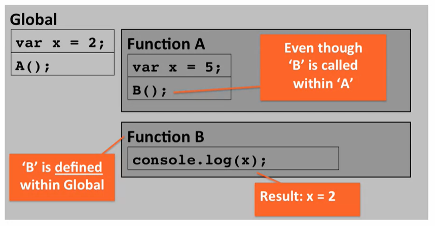

Coursera Web Development HTML/CSS/JS Notes
Module 4: Intro to Javascript
| 2022-03-04 |
| 2022-03-05 |
| 2022-03-08 |
2022-03-04
Module 4
- we are going to concentrate not only on the “how” but also on the “why”, so you are empowered by the Javascript language features, not confused by them. We’ll cover just about everything - from common language constructs and Javascript types to objects, functions, arrays, closures, and scope isolation.
- Javascript is very powerful but often misunderstood
- you can start sublime text from the command line in a given directory so that you don't load a large amount of unnecessary files into memory
- Search google for how to do the above "launch sublime 3 from cmd in windows"
- You can also just open a folder within sublime
- Chrome developer tools: we will now use the Console tab
- We can put script tags within the head of the html file or an external file you can specify a src="" within the tags
- A script tag always requires a closing script tag.
- Something to keep in mind: the Javascript engine inside the browser is a single threaded environment. It is also a sequential execution environment.
- You can also define javascript right before the body of the html file ends.
- In summary you can define javascript in the head or the body and directly in a script tag or using a script tag with a src attribute that links to an external .js file.
- Lecture 41: Part 1:
- Variable definitions start with var
- No types are declared, JS is dynamically typed language
- To define a function you start with "function" followed by the function name followed by parentheses and curly braces
- function a () {...}
- You can also define a variable set equal to a function with no name
- after defined you invoke or execute a function by taking the name followed by parentheses a();
- arguments are defined without 'var'
- function compare (x,y) {
- return x > y;
- }
- You can legally call mixed types or nothing in the function even if it doesn't make sense with respect to the function
- Functions signify a new scope
- Variables and functions defined in the global scope are available everywhere
- varables and functions defined within functions (aka lexical) are available only within that function
- Scope Chain:
- Everything in Javascript is executed in an Execution Context
- Function invocation creates a new Execution Context
- Each Execution Context has:
- Its own Variable Environment
- Special 'this' object
- Reference to its Outer Environment
- Global scope doesn't have a reference to its outer environment since it is the outermost
- If a variable is referenced it will be searched for in its current scope then outer references in sequentially outward order until the global scope is reached. If not found the variable is undefined.
- 
- We can find and example in: examples/Lecture41
Back to Top
2022-03-05
Module 4 Notes Continued
- Lecture 41, Part 2:
- We looked at example 41 which output variable values after being defined within or outside a function to show how execution scope works
- Summary
- Defining variables - dynamically typed
- Defining functions - creates its own scope (lexical)
- JS code runs within an Execution Context
- Scope chain is used to retrieve variables from Outer Variable Environments
- 100% on quiz on first attempt.
Back to Top
2022-03-08
Lecture 42, Par1: Javascript Types
- Javascript has 7 types, 6 primitive and 1 object type
- In javascript an object is simply a name/value pair or collection of name/value pairs
- A primitive type represents a single, immutable value
- immutable means read-only
- Types
- Boolean: Can only have 2 values True or False
- Undefined: signifies that no value has ever been set. Can only have one value; undefined
- Null: signifies lack of value (not lack of definition). Can only have one value: null. It's ok to explicitly set a variable to null.
- Number: is the only numeric type in Javascript. Always a double-precision 64-bit floating point. Integer in JS is just a subset...
- String: is a sequence of characters
- Symbol: is new to ES6, not covered in this course
- Let's go to the code editor...
- Ran some code to show undefined, defined, not defined (not declared)
- Summary
- Javascript defines 7 built-in types, Object and 6 Primitives
- Object type is a collection of name/value pairs
- Primitive type can contain a single, immutable value
- Undefined means variable memory has been allocated but no value has ever been explicitly set yet
- 100% on quiz
Back to Top
2022-03-09
Lecture 43, Part 1: Common Language Constructs
- Javascript allows you to concatenate strings on the fly
- var string = "Hello";
- string += " World";
- string is now "Hello World"
- You can also concatenate within the log function ie console.log(string + "!")
- Regular math operators...
- console.log((5 + 4)/ 3); will log 3
- Undefined variables return NaN
- Equalities
- if (x==y) {
- console.log("x=y")
- }
- Be aware of type coercion. Javascript will convert types and return True for something like x = 4, y = '4' where one value is a string and the other is a number
- If you don't want coercion to occur, use strict equality using triple =, ===. It will first check type.
Lecture 43, Part 2: Common Language Constructs
- What does Javascript consider Boolean True or Boolean False.
- False: false, null, undefined, "", 0, NaN
- || is the or operator in Javascript ie if(false || null)
- Javascript has wrapper functions like Boolean() that you can check true/false
- Boolean(null); ... false
- Boolean("Hello world!"); ... true
- True: true, "hello", 1, -1, "false", any number that is not 0, any string that has a value
- && is the logical and operator, both on the left and right must be true else false
Lecture 43, Part 3: Common Language Constructs
- Best practice for {} style
- The established best practice for Javascript is to put the opening curly brace on the same line of the declaration.
- Sidenote: Its generally best practice to put semicolons at the end of statements.
- for loop
- for (var i = 0; i < 10; i++)
- Initialization, condition, increment/decrement
- i could also be declared above the for statement and in that case you would simply put i = 0 in the initialization.
Summary
- String concatenation
- Math operations
- Type coercion
- Regular (==) and Strict (===) equality
- What is true and what is false in Javascript
- Opening curly brace placment (NOT just style)
- Always place semicolons at the end of statements
- Basic for loop syntax
Lecture 44: Handling Default Values
- We can create a default value such that if a value is not provided we will not get an undefined value
- if (sideDish === undefined) {
- sideDish === "whatever!"
- {
- Shortcut: sideDish = sideDish || "whatever!";
- each gets coerced into a Boolean value
- if sideDish is undefined it will pass False and move to the other side of the or logical operator
- You will see this construct in a lot of professional code.
Got 50% on the quiz on the first try
The question that tripped me up:
var x = 10;
if ( (null) || (console.log("Hello")) || x > 5 ) {
console.log("Hello");
}
I said that "Hello" would be logged 1 time when in reality it will be logged twice.
null will return false, the second condition will log "Hello" to the console and return undefined which will return fales, x > 5 will return true and will move into the if statement and log "Hello" to the console a second time.